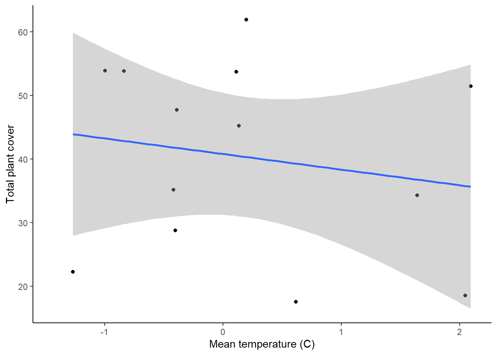

In this lesson, you will tackle your third type of statistical test: linear regressions. Linear regressions are used when both your independent and dependent variables are continuous.
For this lesson, we will work with the temperature and plant size example we have used before. Our question will be: does the bite strength of lizards affect the area of the territory they are able to occupy.
We’ll start off by building our null and alternative models for this question.
First, load the data set. Be sure your working directory is set to the location of the lizard bite data file.
plant <- read.csv("DataFrameExample.csv")Next, build the two models.
plant_null <- lm(Growth ~ 1, plant)
plant_alt <- lm(Growth~ Temperature, plant)To view the output of your models, type the name of each model. Just like when we have worked with this model before, the null model will have just an intercept, and the alternative model will have a intercept and a slope term (labeled “Temperature”) for the effect of temperature on plant growth. Based on the slope term, are higher temperatures likely to lead to slower or faster plant growth? Does it seem like a strong effect?
Now, let’s create a graph to visualize our data. Because we have two
continuous variables, a scatterplot is a good option. We will also
include a best fit line based on our alternative model. If you haven’t
already, load the ggplot2 package first.
library(ggplot2)
ggplot(plant, aes(x=Temperature, y=Growth)) +
geom_point() +
geom_smooth(method="lm")+
labs(x="Temperature", y="Plant Growth") +
theme_classic()## `geom_smooth()` using formula = 'y ~ x'
Let’s again start by analyzing the models using a frequentist approach. We don’t actually need to run any additional tests for this. We can just look at some additional output from the models we already ran.
To view the additional output, use the summary
function.
summary(plant_alt)##
## Call:
## lm(formula = Growth ~ Temperature, data = plant)
##
## Residuals:
## Min 1Q Median 3Q Max
## -0.041734 -0.012130 0.000796 0.010496 0.060543
##
## Coefficients:
## Estimate Std. Error t value Pr(>|t|)
## (Intercept) 0.32926 0.09938 3.313 0.0106 *
## Temperature -0.01497 0.01201 -1.246 0.2480
## ---
## Signif. codes: 0 '***' 0.001 '**' 0.01 '*' 0.05 '.' 0.1 ' ' 1
##
## Residual standard error: 0.03042 on 8 degrees of freedom
## Multiple R-squared: 0.1626, Adjusted R-squared: 0.05787
## F-statistic: 1.553 on 1 and 8 DF, p-value: 0.248When you view the output, you will see a number of things. First, you will be able to see the the formula you used to build the models. Then you will see some information on the distribution of the residuals (the leftover variation not explained by your model). Next, you will see the coefficients from your model, along with standard error od the estimates. The coefficients section will also show you t-values and p-values for each coefficient. These are one-sample t-tests comparing the value of the coefficient to zero.
The information we really want for our linear regression test is down at the very bottom. In the final section, you will see some R-squared values. These are a measure of how much variation in your dependent variable is explained by your independent variable (we will talk about this more in class). Below that, you will see the output of the linear regression test. First is the F-statistic (the same statistic that was calculated for the ANOVA). Then you will see the p-value. Based on these values, would your reject or accept the null hypothesis? What does this tell you about the effect of temperature on plant growth?
Next we will use a likelihood-based approach to test the same
question. Once again, the approach is the same as what you used for the
t-test and ANOVA, using the AIC function to compare the two
models.
AIC(plant_null, plant_alt)## df AIC
## plant_null 2 -37.93176
## plant_alt 3 -37.70574Based on this output, what would you conclude about the effect of temperature on plant growth?